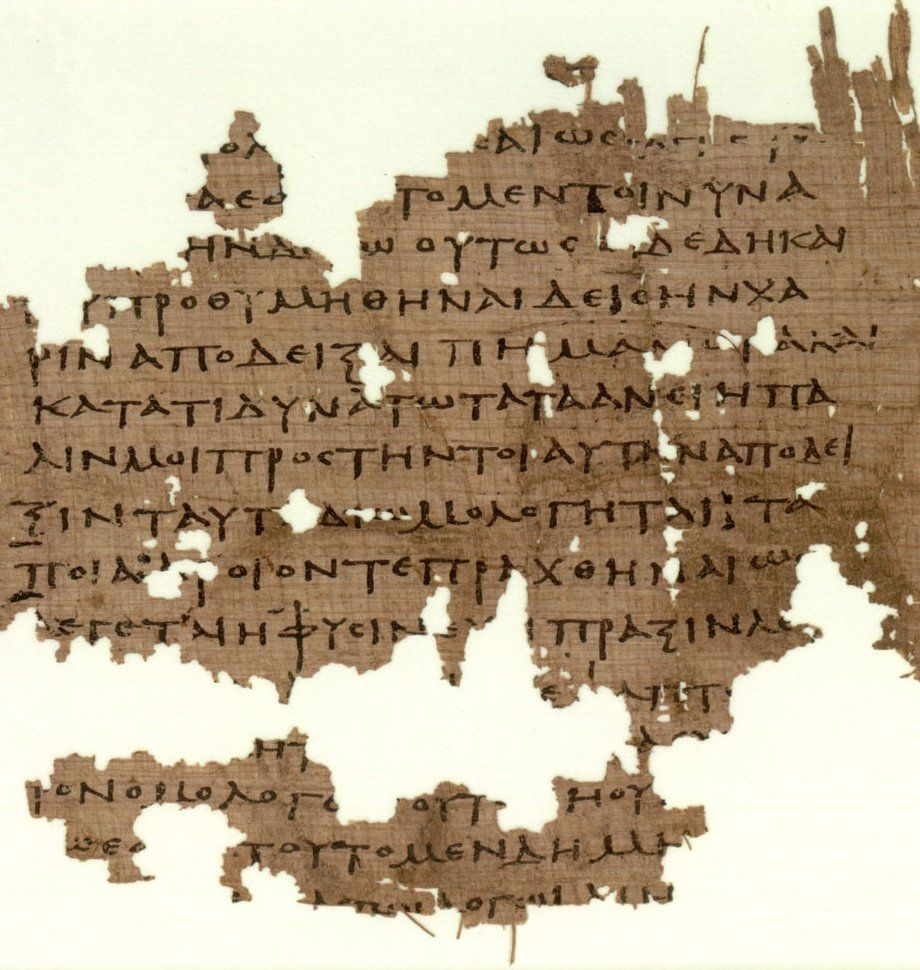
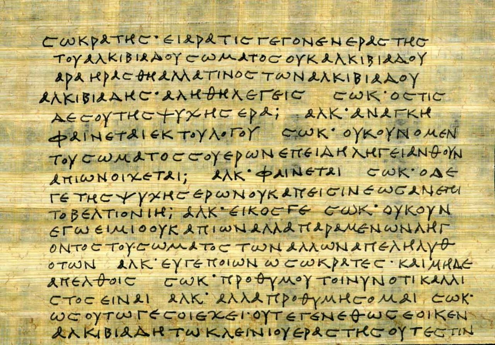
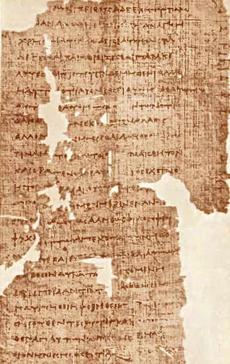

Учение Платона об идеальном государстве
Дата публикации: 22.02.2023
«Государство, – писал он, – возникает, когда каждый из нас не может удовлетворить сам себя, но во многом еще нуждается... его создают наши потребности»
Характеризуя значение Платона и его философии для духовной культуры человечества, Гегель в «Лекциях по истории философии» писал: «Платон принадлежит к всемирно-историческим личностям, его философия представляет собою одно из тех всемирно-исторических творений, которые, начиная со времени их возникновения, оказывали во все последующие эпохи величайшее влияние на духовную культуру и ход ее развития». Платон – действительно один из тех немногих мыслителей, кто был и остается авторитетом во все века и для самых разных культур. К нему апеллировали и на него ссылались не только античные философы, но и деятели Церкви, он был мудрейшим для гуманистов эпохи Возрождения и вплоть до сего дня без обращения к Платону не обходится, наверное, ни один значительный мыслитель.
Этот более-менее общий пиетет носит, однако, особенно часто в современную эпоху, достаточно выраженный одностороннеизбирательный характер, распространяясь лишь на одну составляющую платоновского учения – теорию идей, и не распространяясь на другую – теорию политического устройства. Если первая считается выдающимся вкладом в сокровищницу человеческой мысли, то к социально-философским, политико-теоретическим построениям Платона отношение иное. Нередко их квалифицируют как утопические, даже фантастические, подменяют концептуальный анализ изложением деталей и едва ли не снисходительными комментариями по их поводу.
Подобное разделение, почти противоположная оценка разных частей единой концепции мыслителя такого ранга – сам по себе факт исключительный и заслуживает не только удивления, но и осмысления-преодоления. Оно является, скорее, показателем разорванности и субъективизма современного сознания, а не проистекает из адекватного понимания целостной и взыскующей истины платоновской мысли. Во всяком случае, сам Платон, насколько можно судить по обстоятельствам его жизни и темам его крупнейших, итоговых произведений, одной из главных своих задач считал разработку политической теории. Как писал А. С. Богомолов: «Самое общее определение философии Платона необходимо основывается на том, что афинский мыслитель поставил перед собою задачу защиты и теоретического обоснования общественного устройства, которому грозил кризис, – полисного устройства древнегреческого общества».
Действительно, именно Платону принадлежит первая в истории мысли систематически разработанная концепция социальнополитического, государственного устройства, чьё влияние на последующее развитие социально-политической теории трудно переоценить.
Как известно, Платон разрабатывал свою теорию полисного устройства в острейшей идейно-теоретической борьбе с софистами и киниками в эпоху, когда, по словам А. Тойнби, «эллинская цивилизация надломилась». Духовная ситуация того времени характеризовалась ослаблением традиционных религиозных и моральных авторитетов, упадком нравственности, экспансией релятивизма, что было в значительной степени следствием распространения новой системы ценностей, носителями и пропагандистами которой и были софисты и киники. В этих условиях Платон и принял на себя задачу противостояния разрушительным тенденциям современности. Для выполнения этой задачи было необходимо развенчание софистических учений, показ их искусственности, произвольности и не только моральной, но, главное, теоретической, концептуальной несостоятельности. А в конструктивном отношении принципиальным для Платона было построение претендующей именно на объективную истинность и логическую безупречность теории должного, соответствующего действительной природе человека и общества социально-политического устройства. Теории идеального полиса, которая раскрывала бы принципы организации, идею полиса как такового и могла послужить эффективным инструментом идейно-теоретической деятельности, предоставив объективный критерий для сопоставления и оценки различных форм политического устройства и поставив тем самым социально-политическое познание на объективную концептуально-теоретическую основу.
Если софисты отрицали объективность истины, то Платон ее утверждал, и его подход к познанию полиса в противоположность софистическому был не произвольно-вкусовым, а, во всяком случае субъективно, сугубо исследовательским, научным, говоря современным языком. Его «защита традиционного полисного устройства» не могла быть и не была поэтому предвзятой апологией, внешне теоретической легитимацией собственных политических пристрастий и решения ситуативных политических задач. Платон начинает с рассмотрения действительного общества (государства, по его терминологии), его естественных самоочевидных предпосылок. Главное для него – показать, что совместная жизнь и определенная форма ее организации являются необходимыми, вытекающими из самой природы человека. «Государство, – писал он, – возникает, когда каждый из нас не может удовлетворить сам себя, но во многом еще нуждается... его создают наши потребности».
Таким образом, Платон акцентирует несамодостаточность индивида, невозможность для него жить вне общества. Полисное, государственное устройство человеческой жизни – не вопрос договора, а естественно-природная необходимость, обусловленная потребностями самого человека. Столь же необходимо и неизбежно распределение функций, разделение труда при любой форме общественной организации. Его главным основанием, помимо «производственной» целесообразности, является объективно существующее, согласно Платону, природное неравенство задатков и способностей людей: «каким образом государство может обеспечить себя всем этим (средствами для удовлетворения потребностей индивида. – С. Г.) не так ли, что кто-нибудь будет земледельцем, другой строителем, третий ткачом», а кроме того: «люди рождаются не слишком похожими друг на друга, их природа бывает различна да и способности к тому или иному делу также... Поэтому можно сделать все в большем количестве, лучше и легче, если выполнять одну какуюнибудь работу соответственно своим природным задаткам, и притом вовремя, не отвлекаясь на другие работы».
В силу этого Платон убежден, что полисное устройство не может принимать произвольные формы. Обязательность его структурной дифференциации вытекает (принципиально, конечно, а не в деталях) из эффективности и неизбежности известной специализации в исполнении жизненно важных социальных функций, собственно, в процессе удовлетворения потребностей индивида как разумного общественного существа.
В связи с этим перед государством встает важнейшая, уже не столько экономическая, сколько социальная, нравственная задача – произвести разделение труда, распределение обязанностей между своими жителями таким образом, чтобы оно в наибольшей степени соответствовало их природным задаткам и склонностям, чтобы каждый имел возможность заниматься определенным делом, обеспечивая свои реальные потребности посредством взаимообслуживания в рамках государственного целого. Именно такое распределение является для Платона показателем справедливого государственного устройства и необходимым условием справедливой, а значит, и счастливой жизни граждан: «...каждый отдельный человек должен заниматься чем-нибудь одним из того, что нужно в государстве, и притом как раз тем, к чему он по своим природным задаткам больше всего способен... заниматься своим делом и не вмешиваться в чужие – это и есть справедливость». Он понимает, что адекватное разрешение этой задачи невозможно в эмпирически существующем государстве: «у нас человек не может быть ни двойственным, ни множественным, раз каждый делает что-то одно. Поэтому только в нашем государстве (идеально-образцовом. – С. Г.) мы обнаружим, что сапожник – это сапожник, земледелец – это земледелец... военный человек – это военный, и так далее».
Вместе с тем Платон показывает, что степень и принципы участия государства в осуществлении разделения труда при том или ином государственном строе различны. Поэтому различны эффективность и адекватность этого разделения для общества, например, при аристократии и при демократии. Именно различие в степени адекватности выполнения государством своей важнейшей функции при различных государственных устройствах и служит для Платона важнейшим критерием для оценки последних. Свой сравнительный анализ неправильных порочных устройств и их граждан Платон, как известно, проводит, располагая их в порядке нарастающей порчи, удаления от описанного им идеального, совершенного государства. Первой из отрицательных форм в силу ее наименьшей порочности Платон рассматривает тимократию. Это «государственный строй, основывающийся на честолюбии». В таком государстве правителями оказываются проявившие наибольшую доблесть на войне, люди, доказавшие свою преданность государству. Воины «будут воздерживаться от земледельческих работ, ремесел и остальных видов наживы», все материальные заботы возложены на низшие сословия и рабов. Следующий по удаленности от совершенного тип государства – олигархия. «Это строй, основывающийся на имущественном цензе; у власти стоят там богатые, а бедные не участвуют в правлении». Осуществляемое при олигархии сословное разделение граждан не проводится последовательно и однозначно, это и является ее главнейшим пороком, наличие которого показывает, что государство не справляется со своей важнейшей функцией. «Ведь мы уже и раньше не одобрили, что при таком государственном строе одни и те же лица будут и землю обрабатывать, и деньги наживать, и нести военную службу, то есть заниматься всем сразу».
Следующая ступень разложения, еще худшая форма государственного устройства – демократия. Здесь принципом государственного строительства оказывается воля большинства и поэтому реально правят те, кто завоевывает «расположение толпы». Здесь господствует оборачивающееся несправедливостью равенство, «уравнивающее равных и неравных». Основной закон демократии является отрицанием основного закона справедливого государства. При ней государство принципиально не отправляет свою основную функцию, здесь каждый может заниматься, чем пожелает, или не заниматься ничем: «Эта снисходительность вовсе не мелкая подробность демократического строя: напротив, в этом сказывается презрение ко всему тому, что мы считали важным, когда основывали наше государство».
Разрушение сословий, прогрессирующее всесмешение и разложение общественных связей и установлений порождают главный порок демократии, который подтачивает и порабощает ее, приводя государство к тирании. Тирания – это власть одного над всеми, ничем не ограниченный произвол отдельного лица. Принцип тиранического правления прямо противоположен принципу совершенного государства. При тирании лучшие, достойнейшие, наиболее способные люди уничтожаются и изгоняются, так как именно в них тиран видит угрозу собственному правлению, а благополучие государства его совершенно не интересует. Здесь отбор людей и распределение обязанностей производится по принципу «чем хуже – тем лучше», и тирана всегда окружает «толпа негодяев»: «тирану надо зорко следить за тем, кто мужествен, кто великодушен, кто разумен, кто богат. Благополучие тирана основано на том, что он поневоле враждебен всем этим людям и строит против них козни, пока не очистит от них государство». Это очищение, отмечает Платон, «противоположно тому, что применяют врачи: те удаляют из тела все наихудшее, оставляя самое лучшее, здесь же дело обстоит наоборот».
Так как тиран заботится только о собственных вожделениях, он не останавливается перед их удовлетворением за счет государства, растрачивая государственные средства и непомерно повышая налоги. Для того, чтобы оправдывать необходимость своей власти, тиран постоянно затевает войны, держит общество в напряжении. Заканчивается тираническое правление тем, что народ попадает в рабство к тирану.
Таким образом, мы видим, что важнейшим основанием для платоновской классификации существующих государственных устройств, в полном соответствии с его пониманием справедливости, является способность государства осуществлять разделение и соподчинение сословий, то есть иерархию в обществе. По Платону, чем более последовательно, конкретно и четко проведено деление на сословия, чем строже и неукоснительнее соблюдается иерархия сословий, тем ближе государство к совершенному типу.
Вместе с тем необходимо отметить, что сколь бы важным ни было вышеуказанное основание деления, оно не является единственным в платоновской классификации, поскольку она с возможной полнотой характеризует справедливость того или иного государственного устройства.
Дело в том, что в понимании Платона справедливость есть то главное, что объединяет людей. Именно благодаря ей люди и живут совместно, помогают друг другу, и в следовании справедливости получают возможность счастливой жизни. Отсутствие справедливости приводит к раздорам, взаимной борьбе и ненависти, делает невозможной совместную жизнь и деятельность: «Ведь несправедливость вызывает раздоры, ненависть, междоусобицы, а справедливость – единодушие и дружбу». В соответствии с таким пониманием справедливости важнейшей задачей государства, функцией государственной власти становится поддержание и укрепление единства, целостности общества. «Может ли быть, по-нашему, большее зло для государства, чем то, что ведет к потере его единства и распадению на множество частей? и может ли быть большее благо, чем то, что связует государство и способствует его единству?» – задается вопросом Платон и отвечает: «По-нашему, не может быть»15. Платон считал, что основными причинами, нарушающими единство государства, порождающими конфронтацию между людьми, аморальные поступки, являются желание обладать чрезмерным количеством материальных благ, вызываемое наличием частной собственности, и неправильное воспитание. Именно поэтому в идеальном справедливом государстве не существует частной собственности, по крайней мере, для двух высших сословий и вводится исключительно государственное воспитание и контроль за произведениями искусства.
Таким образом, платоновская классификация неправильных государственных устройств отражает и степень выполнения государством другой его важнейшей функции – поддержание целостности и единства общества. И с этой точки зрения тимократия оказывается наилучшим из существующих неидеальных типов государства. Там «почитают правителей», устраивают совместные трапезы, там высшие сословия не затронуты духом наживы, во многом сохраняется традиционное воспитание. Олигархия также оказывается вторым среди неправильных государственных устройств. В ней уже в полной мере проявляется важнейший обусловленный введением имущественного ценза порок – разделение и противоборство между богатыми и бедными: «подобного рода государство неизбежно не будет единым, а в нем как бы будут два государства: одно государство бедняков, другое – богачей. Хотя они и будут населять одну и ту же местность, однако станут вечно злоумышлять друг против друга». Следующая ступень распада – демократия. При характерном для этого строя параличе государства каждый сам себе хозяин и никто не заботится об интересах целого. Общество при демократии распадается уже на три борющиеся части: лиц, так сказать, свободных профессий или, по терминологии Платона, трутней, богачей и народ. Наихудший вид государственного устройства – тирания. Здесь государство превращается в свою противоположность, здесь попирается мораль, культивируются продажность и подозрительность, война всех против всех.
Говоря о платоновской классификации и характеристике несовершенных форм государственного устройства, один из крупнейших советских знатоков античной философии В. Ф. Асмус отмечал, что «в основе ее лежат наблюдения Платона над существовавшими в различных частях Греции видами государственного устройства различных греческих полисов». С такой оценкой, конечно же, нельзя не согласиться, вместе с тем она недостаточно проявляет одно существенное обстоятельство платоновского анализа различных принципов государственного строительства. Дело в том, что перед Платоном стояла задача не эмпирического описания различных существующих в современной ему Греции государственных устройств, а проникновения в их сущность. Конструирование идеальных образцов, чистых беспримесных типов, выяснение принципиального несовершенства того или иного государственного строя – вот цель и смысл платоновской классификации.
Проводя свой анализ реально существующих несовершенных государственных форм, в сравнении с разработанной им моделью идеального справедливого государственного устройства, Платон исходит из понимания справедливости как ценности, благодаря которой в государстве, поскольку оно выполняет свое предназначение, наличествуют расчлененность, иерархичность и целостность, что, собственно говоря, и делает возможной и необходимой совместную жизнедеятельность людей. Характеризуя платоновское понимание справедливости и вытекающее из него представление о главных функциях государства, Гегель в своих «Лекциях по истории философии» писал: «Справедливость отдает вообще должное каждому особенному определению и возвращает его вместе с тем в целое». И о государстве: «Без сословий, без этого деления на большие массы, государство не представляет собой организма: эти великие различения суть субстанциальные различения».
Не контролируемый государством, осуществляющийся по случайным основаниям, без учета, прежде всего, нравственных достоинств и недостатков конкретной личности переход граждан из одного сословия в другое является величайшим злом для государства. Более того, нарушение сословной иерархии – показатель того, что государство не справляется со своим предназначением, и причина его «полнейшей гибели», «...вмешательство... сословий в чужие дела и переход из одного сословия в другое, – утверждает Платон, – величайший вред для государства и с полным правом может считаться высшим преступлением», и далее: «... сделает справедливым государство – преданность своему делу у всех сословий... причем каждое из них будет выполнять то, что ему свойственно». Идеальное справедливое государство Платона, эталон, на сравнении с которым построена его классификация государственных устройств, состоит из трех сословий: правителей-философов, воинов-стражей и дельцов-ремесленников, земледельцев и т. п. В нашу задачу не входит сколько-нибудь подробный пересказ рисуемых Платоном подробностей идеального общественного устройства, мы отметим лишь несколько его существенных черт.
Строя свое образцовое государство, Платон исходит, прежде всего, из двух посылок: естественного неравенства людей и необходимости для них совместной жизни. В силу этого сословное деление должно осуществляться таким образом, чтобы общественное положение человека в максимальной степени соответствовало его личностным, прежде всего, нравственно-интеллектуальным достоинствам, и с другой стороны – так, чтобы наиболее эффективно удовлетворять потребности людей и общественных слоев во взаимообслуживании, соответствовать принципу взаимодополнительности сословий. Не имеющей достаточных оснований оказывается поэтому интерпретация платоновского государства как носящего классовый характер, выражающего интересы аристократии. Совершенное государство устроено таким образом, что оно служит не меньшинству или большинству, выражает не интересы того или иного слоя, сословия, а все их ставит на службу целому. Например, стражи служат не своим личным интересам, а «заботятся о государстве в целом и его процветании». Каждое сословие выполняет определенные, необходимые для существования общества функции и, тем самым, увеличивая благосостояние всех посредством взаимоудовлетворения, обеспечивает свои собственные интересы: «надо предоставить всем сословиям возможность иметь свою долю в общем процветании соответственно их природным данным». Правители государства должны следить за тем, чтобы сословные перегородки не были препятствием для продвижения талантливых и благородных людей. Не факт рождения от родителей, принадлежащих к определенному сословию, а личные достоинства, природные задатки и склонности – вот единственное основание причисления гражданина к тому или иному сословию в справедливо устроенном государстве Платона. Распознавание и установление природных свойств и склонностей подрастающего поколения – главная задача правителей: «...бог требует, прежде всего и преимущественно, чтобы именно здесь они оказались доблестными стражами... и, если ребенок родится с примесью меди или железа, они никоим образом не должны иметь к нему жалости, но поступать так, как того заслуживают его природные задатки, то есть включать его в число ремесленников или земледельцев; если же родится кто-нибудь с примесью золота или серебра (у низшего сословия. – С. Г.), это надо ценить и с почетом переводить его в стражи или в помощники».
Важнейшим теоретическим основанием, своего рода аксиомой, на которой строится модель идеального государства, было для Платона положение о взаимоадекватности миров человеческой личности и государства в целом.
Законы, правящие космосом, едины, а значит, сущность, структура и функции микрокосма-человека и макрокосма-государства аналогичны и являются результатом действия идеальных начал. «Справедливый человек нисколько не будет отличаться от справедливого государства по самой идее своей справедливости»23. Поэтому соответствующее идее справедливости совершенное государство Платона устроено таким образом, что в нем осуществлена иерархическая соподчиненность и гармоническое сочетание основных начал во имя целого. Разуму, способности рассуждений, соответственно философам, подобает господствовать, яростному, аффективному, волевому началу, то есть воинам-стражам, – быть вооруженной защитой и «охранять свободу», подчиняясь первому началу, а оба этих начала должны управлять началом вожделеющим, неразумным и косным – соответственно дельцами, ремесленниками и земледельцами.
Характеризуя платоновскую концепцию государственного строя, А. Ф. Лосев писал: «По своей природе каждое сословие находится в таком наружном и смысловом отношении к двум другим сословиям, что все эти три сословия оказываются неразрывным целым. В идеальном «Государстве» Платона каждый делает то, что свойственно его природе и не может заходить в другие области, которые обслуживаются другими специалистами. Максимальное разделение труда и максимальное единство его, несмотря на многоразличие его проявлений – это основная характеристика учения Платона о государстве, о справедливости и о личной жизни отдельных граждан».
Как известно, философское учение Платона исходит из принципа аксиологического, онтологического, гносеологического примата мира идеального бытия, умопостигаемых сущностей перед миром эмпирической действительности. С этой точки зрения диалог «Государство» – теоретико-познавательное произведение (не случайно значительная его часть посвящена собственно гносеологическим проблемам). В нем Платон пытается решить задачу постижения сущности государства, сконструировать чистый идеальный тип, конкретизировать образец совершенного государственного устройства, раскрыть природу, идею государства как такового. В этой связи представляется не адекватной распространенная в философской литературе оценка «Государства» Платона как утопии. Вот, например, что пишет в комментариях к этому диалогу В. Ф. Асмус: «Это модель «идеального» государства, то есть такого, которое должно было бы по убеждению Платона существовать, но которого до сих пор еще не было и не существует нигде в реальности. Тем самым диалог «Государство» включается в литературный род или жанр так называемых утопий». Эта же характеристика платоновской концепции с подобной же аргументацией повторяется и в посвященных древнегреческой философии учебных пособиях и монографиях. Сразу же приходится заметить, что, вообще говоря, любой проект, будь он проектом домика из детских кубиков или проектом коммунистического строя, существует идеально, отнюдь не становясь «тем самым» утопическим. Но дело даже не в этом, ведь «идея Платона есть смысл, смысловая сущность и определение той или иной вещи, самый принцип ее осмысления, ее порождающая модель» и «в платоновском идеализме вещь есть функция идеи».
Таким образом, можно сказать, что, изображая идеальное государство, Платон в прямом смысле слова рисовал его с натуры, с ормально-гносеологической точки зрения (как ее понимал Платон), он не более чем художник, срисовывающий яблоко на блюдце, различие лишь в том, что Платон избрал средствами для своего подражания-мимесиса не зрение и краски, но умозрение и слова, а предметом – государство. Для него высказанное в «Государстве» – понятийное выражение того, что «можно видеть умственным взором».
Платон не воображает, он именно изображает, познает, во всяком случае, субъективно, он не более творец своего «Государства», чем Ньютон – сформулированного им закона всемирного тяготения. Перед Платоном в «Государстве» стоят, прежде всего, познавательные, а не проективные задачи. Он не измышляет, а осмысляет, не творит, а проникает в сотворенное. Характеризуя платоновское понимание взаимоотношений идеальносущей и эмпирической реальности, А. Ф. Лосев отмечал: «Платоновская идея оказывается субстанционально данной, порождающей моделью и всего космоса, и всего, что находится внутри этого космоса». Поэтому Платона не интересуют возможности создания утопического государства всеобщего благоденствия и счастья, объективное познание идеально сущего образца и возможностей строить эмпирическое существование государства исходя из его познанной сущности, максимально приближаясь к ней, – вот его цель.
Согласно общепринятому определению утопия – «изображение идеального общественного строя, лишенное научного обоснования». Именно это качество (научная, теоретическая необоснованность, а отнюдь не идеальный характер) и делает ту или иную модель или проект утопическими. Смысл и цель утопии – изображение желаемого, максимально наилучшего; ее принцип – безразличие к обоснованию собственной истинности, к возможности собственного осуществления; она, если угодно, гносеологически не релевантна. Поэтому во всякой утопии, по справедливому замечанию В. Ф. Асмуса, «имеется элемент фантастики». В этой связи особенно показательным становится, что, квалифицировав «Государство» как утопию, Асмус не приводит доказательств ее фантастичности. Э. Д. Фролов, стремясь подтвердить разделяемую им оценку концепции Платона как утопической, утверждает, что последний сам признавал ее фантастичность: «Признавая фантастичность своего проекта, он (Платон. – С. Г.) подчеркивал, однако, его идеальную образцовость и готов был радоваться любым попыткам хотя бы частичного его воплощения в жизнь»33. При всем уважении к этому известному исследователю античной общественной мысли приходится признать, что данное утверждение неосновательно. Он соединил несоединимое для Платона, в объективноидеалистической концепции последнего возможно что-то одно: либо «признание фантастичности проекта», либо «подчеркивание его идеальной образцовости», во всяком случае, если слово «фантазия» употребляется в общепринятом значении, то есть как вымысел. Но дело даже не в этом. Мы, например, не обнаружили указанного признания Платона ни в тех фрагментах, к которым отсылает Фролов в подтверждение своей мысли, ни вообще в тексте «Государства». Более того, Платон прямо говорит, что его работа не имеет ничего общего с фантазией: «Считать, что какая-нибудь одна из этих двух возможностей (установление совершенного государства. – С. Г.) или они обе – дело неосуществимое, я лично не нахожу никаких оснований. Иначе нас справедливо высмеяли бы за то, что мы зани-маемся пустыми пожеланиями». Платон в «Государстве» не мечтатель, его интересует не желаемое, а истинное и потому осуществимое, реально возможное: «Осуществление такого строя вполне возможно, и о невозможном мы не говорим».
Другое дело, что Платон адекватно представлял ограниченные возможности реального воплощения любых идеальных моделей и проектов. Он прекрасно понимал, что изображенный им идеальный образец должен лишь служить эталоном, указывающим цели и средства совершенствования реально существующих государственных устройств: «Может ли что-нибудь быть исполнено так, как сказано?.. Уже по самой природе дело меньше, чем слово, причастно истине... Так не заставляй же меня доказывать, что и на деле все должно полностью осуществиться так, как мы это разобрали словесно. Если мы окажемся в состоянии изыскать, как построить государство, наиболее близкое к описанному, согласись, мы сможем сказать, что уже выполнили твое требование, то есть показали, как можно это осуществить».
Таким образом, предпринятое Платоном в «Государстве» исследование представляет из себя попытку познания сущности, идеи государства как социального феномена в целях проведения на основе результатов этого познания сравнительного анализа причин несовершенства эмпирически существующих государственных форм и поиска средств реального установления такого государственного строя, который находился бы в максимально возможном соответствии с действительной сущностью государства.
Об этом хорошо сказал Кант в «Критике чистого разума», в подразделе «Об идеях вообще», где он специально рассматривает гносеологическую корректность и познавательное значение платоновской теории идеального государственного устройства. «Хотя этого совершенного строя никогда не будет, тем не менее следует считать правильной идею, которая выставляет этот maximum в качестве прообраза, чтобы, руководствуясь им, постепенно приближать законообразное общественное устройство к возможно большему совершенству». И здесь же комментарий относительно «утопизма» Платона: «Платоновская республика вошла в пословицу как якобы разительный пример несбыточного совершенства, возможного только в уме досужего мыслителя... Между тем было бы гораздо лучше проследить эту мысль внимательнее и осветить ее новыми исследованиями (там, где великий философ оставил нас без своих указаний), а не отмахнуться от нее, как от бесполезной, под жалким и вредным предлогом того, что она неосуществима».
Заметим также, что характеристика платоновской теории государственного устройства как утопической является результатом игнорирования требования оценивать любую теорию, прежде всего, исходя из ее собственных, а не противоположных ей принципов и критериев. Более того, такая характеристика социально-философского исследования Платона оказывается нетворческой, приводит к невозможности ответственной постановки главного содержательного вопроса – насколько соответствует истине платоновское раскрытие сущности государства. А ведь только такая постановка вопроса является единственно правомерной и продуктивной для социально-философского познания, поскольку его целью является конкретизация и прояснение понятия государства.
В этом отношении оказываются совершенно безосновательными упреки Платона в том, что его государство – чисто понятийная, идеально-образцовая конструкция, не имеющая и, в принципе, не могущая иметь эмпирических аналогов. Кант, например, разъясняя правомерность и плодотворность платоновского подхода, отмечал: «...что же касается принципов нравственности, законодательства и религии, где только идея (добра) делает возможным опыт... то в этой области Платон имеет совершенно особую заслугу...» – и далее принципиальное утверждение: «... в отношении нравственных законов опыт (увы!) есть источник видимости, и, устанавливая законы того, что должно делать, было бы в высшей степени предосудительно заимствовать их из того, что делается или ограничиваться этим». Стоит отметить и то, что платоновский принцип построения и раскрытия понятия «государство» идентичен принципу выработки понятия «идеальный газ» в физике. Понятие «государство» является одним из фундаментальных понятий социальной науки и в качестве познавательного средства не отличается от фундаментальных, идеально-образцовых понятий естественных наук, таких как, скажем, точка, сила, атом и т. д. Эти понятия, как известно, также не имеют эмпирических аналогов, что отнюдь не превращает их в произвольные, напротив, они являются эффективным инструментом познания и преобразования эмпирической действительности.
Показательной в этой связи является оценка результатов платоновского подхода к эмпирической реальности крупнейшим физиком современности В. Гейзенбергом. Сравнивая понимание природы вещества, оснований материального мира, развиваемое Платоном, с тем, которое отстаивал Демокрит, он писал: «Мне думается, современная физика со всей определенностью решает вопрос в пользу Платона. Мельчайшие единицы материи в самом деле не физические объекты в обычном смысле слова, они суть формы, структуры или идеи в системе Платона».
Кроме того, напомним, что утопизм как настроенность ума и души был чужд Платону как личности, как философу и как гражданину. Он, по справедливому замечанию Виндельбанда, «принадлежит к тем, которые желают знать истину, чтобы осуществить ее». Оценка истинности и познавательных возможностей платоновской теории государственного устройства может быть, конечно, различной, но для превращения ее в утопию нет убедительных оснований. Напротив, имеются весомые основания утверждать ее исключительное значение для возникновения и развития политической науки. Современные политологи почему-то проходят мимо того обстоятельства, что метод познания социальных явлений, измененный Платоном в «Государстве», в сущности предвосхищает идеально-типическую методологию неокантианцев и М. Вебера, на что обратил внимание А. Лосев и что специально отмечали исследователи неокантианства, говоря, что Платон понимал идеи «также в смысле основоположений, на которых держится объективная достоверность и внутреннее единство научного знания. Эта концепция идеи составляет – согласно толкованию Марбургской школы – внутреннюю пружину Платонова идеализма. Историческое и систематическое значение его поэтому должно быть учитываемо... по учению об идее – гипотезе как логической основе истинного знания. Платон – родоначальник того научного (подчеркнуто мною. – С. Г.) идеализма, который, снова возродившись в эпоху Ренессанса, проходит красною нитью через учения Декарта и Лейбница и, наконец, достигает своего «систематического завершения в лице Канта».
Действительно, Платон, по сути, разработал эталон государства как такового и дал на его основе идеально-типические характеристики различных политических режимов, создав тем самым для социально-политического познания объективный критерий изучения, классификации и совершенствования реально существующих политических форм. Именно на этом основано мощнейшее влияние теории Платона на весь ход развития политического познания вплоть до наших дней. Как отмечает современный немецкий исследователь К. Хюбнер: «Дефинитивное введение абстрактного мышления в политическую философию Платоном имело эпохальные последствия, с какими бы неправильно понятыми утопическими конструкциями оно ни связывалось».